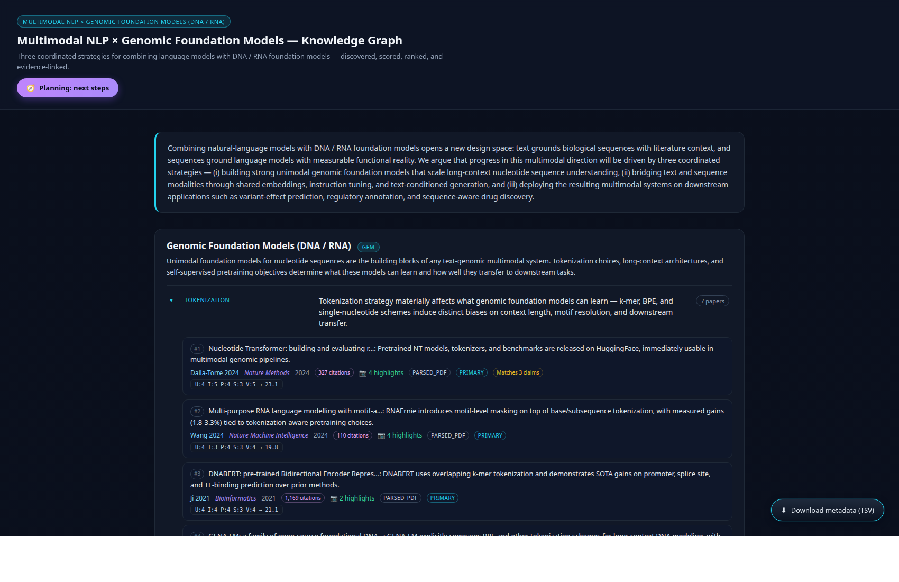
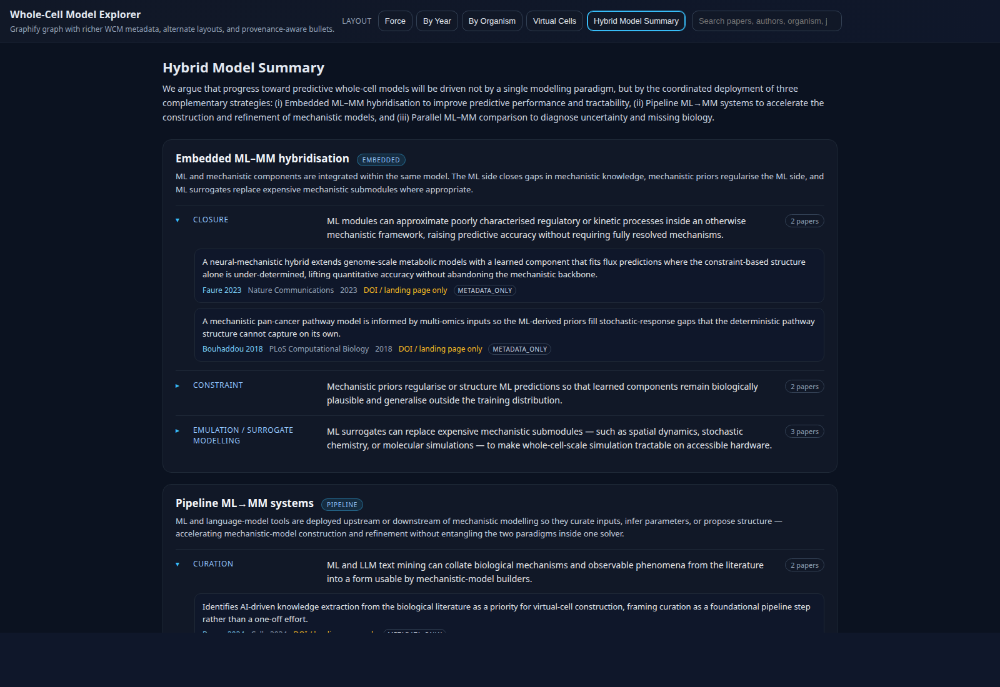

The pipeline (used by every project below)
An Architect defines the topic ontology — paradigms, claims, a 5-dimension scoring rubric, and a high-impact venue allowlist. The pipeline then runs through a sequence of single-purpose agents that read from shared canonical files and write to their own narrow output slots:
Each agent's logic is also a CLI script — the pipeline is reproducible end-to-end. To build a knowledge graph for a new topic, write a new ontology and re-run the same scripts.
Projects

Multimodal NLP × Genomic Foundation Models (DNA / RNA)
A literature knowledge graph for combining language models with DNA / RNA foundation models — three paradigms (genomic FMs, multimodal integration, applications), nine claims, with a Planning view of five next-step research directions distilled from the corpus's own Discussion / Future-Work sections.

Whole-Cell Model Paper Collection
Curated literature on whole-cell models, anchored on the 2026 Cell paper "Bringing the genetically minimal cell to life on a computer in 4D". Five viewer layouts (Force / By Year / By Organism / Virtual Cells / Hybrid Model Summary) and an evidence-table view with 89 ranked supporting papers across three hybrid ML–mechanistic strategies. The corpus where this pipeline first ran end-to-end.

Diffusion Models × Natural Language × Genomic Sequences
Diffusion models at the intersection of continuous-noise generative modelling, discrete language tokens, and protein / DNA / RNA sequence design. Three paradigms (continuous foundations, discrete & language diffusion, biological sequence & structure diffusion); 67 ranked evidence rows including DDPM, Score SDE, LDM, DDIM, DPM-Solver, D3PM, SEDD, MDLM, LLaDA, RFdiffusion, Chroma, EvoDiff, DPLM, DNADiffusion, DiscDiff.
Your next knowledge graph
The pipeline is topic-agnostic. Drop a new ontology JSON into scripts/, re-run the agents, and the next project tile lands here.